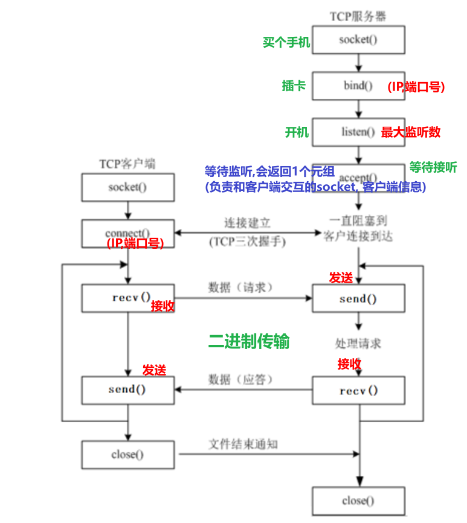
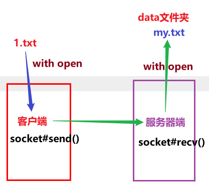
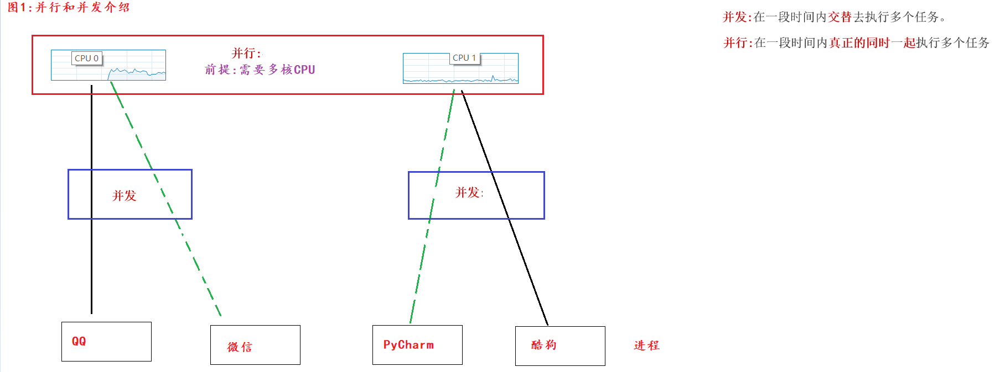
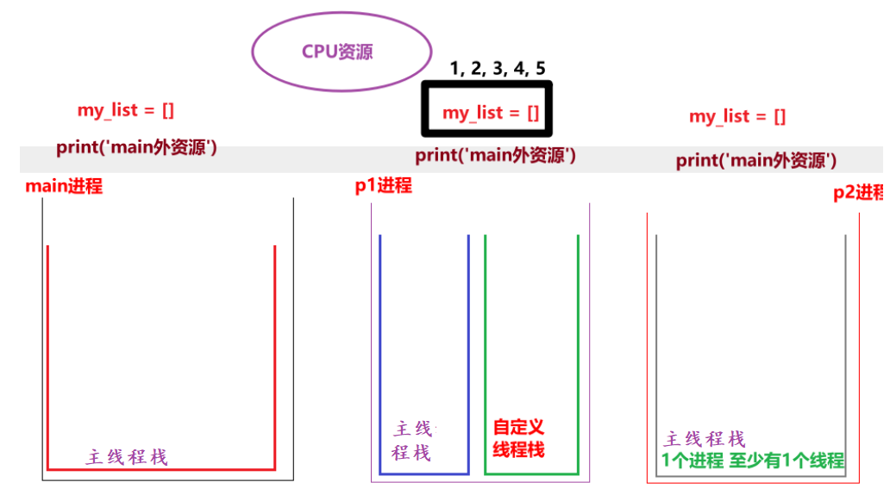

网络编程介绍
- 概述
就是用来实现网络互联的 不同计算机上 运行的程序间 可以进行数据交互.
-
三要素
-
IP地址: 设备(电脑, 手机, Ipad...)在网络中的唯一标识
分类:
IPV4, 4字节, 十进制. 例如: 192.168.88.100
IPV6, 8字节, 十六进制, 宣传语: 可以让地球上的每一粒沙子都有自己的IP
两个DOS命令:
查看IP:
windows: ipconfig
Linux, Mac: ifconfig
测试网络连接:
ping ip地址 或者 域名
-
端口号: 程序在设备(电脑, 手机, Ipad...)上的唯一标识.
范围: 0 ~ 65535, 其中0 ~ 1023已经被系统占用或者用作保留端口, 自定义端口时尽量规避这个范围.
-
协议: 传输规则, 规范.
常用的协议:
TCP(这个用的最多) 和 UDP
TCP特点:
1.面向有连接
2.采用字节流传输数据, 理论无大小限制.
3.安全(可靠)协议.
4.效率相对较低.
5.区分客户端和服务器端.
入门创建Socket对象
""" 案例: 演示socket对象的创建. 网络编程介绍: 概述: 网络编程也叫网络通信, Socket通信, 即: 通信双方都独有自己的Socket对象, 数据在Socket之间通过 数据报包(UDP协议) 或者 字节流(TCP协议) 的形式进行传输. 大白话举例: 你和你遥远的朋友在聊天, 看看这你们两个人在交互, 其实是通过 两部手机(双方各自的手机)来交互的. """ # 导包 import socket # 创建Socket对象 # 参1: Address Family, 地址族, 即: Ipv4 还是 IpV6, 默认值: AF_INET(ipv4) AF_INET6(ipv6) # 参2: Socket Type, Socket类型, 即: TCP 还是 UDP, 默认值: SOCK_STREAM(TCP) SOCK_DGRAM(UDP) socket_obj = socket.socket(socket.AF_INET, socket.SOCK_STREAM) print(socket_obj)
网编案例_一句话交情
- 图解

- 服务器端代码
""" 案例: 网编入门案例, 服务器端给客户端发送消息, 客户端给出回执信息. 服务器端开发流程: 1. 创建服务器端Socket对象. 2. 绑定IP地址和端口号. 3. 设置最大监听数. 4. 等待客户端申请建立连接. 5. 给客户端发送消息. 6. 接收客户端的信息并打印. 7. 释放资源. 细节: 客户端和服务器端是通过 字节流(bytes) 的形式实现的. """ # 导包 import socket # 1. 创建服务器端Socket对象. ipv4, 字节流(TCP) server_socket = socket.socket(socket.AF_INET, socket.SOCK_STREAM) # 2. 绑定IP地址和端口号. server_socket.bind(('192.168.22.51', 10086)) # 3. 设置最大监听数. server_socket.listen(5) # 4. 等待客户端申请建立连接. accept_socket, client_info = server_socket.accept() # 5. 给客户端发送消息. accept_socket.send(b'Welcome To Socket!') # 6. 接收客户端的信息并打印. data = accept_socket.recv(1024).decode('utf-8') print(f'服务器端收到 来自{client_info} 的信息: {data}') # 7. 释放资源. accept_socket.close() # server_socket.close() # 服务器端一般不关闭.
- 客户端代码
""" 案例: 网编入门案例, 服务器端给客户端发送消息, 客户端给出回执信息. 客户端开发流程: 1. 创建客户端Socket对象. 2. 连接服务器端, 指定: 服务器端IP, 端口号. 3. 接收服务器端的信息并打印. 4. 给服务器端发送消息. 5. 释放资源. 细节: 客户端和服务器端是通过 字节流(bytes) 的形式实现的. """ # 导包 import socket # 1. 创建客户端Socket对象. ipv4, TCP协议 client_socket = socket.socket(socket.AF_INET, socket.SOCK_STREAM) # 2. 连接服务器端, 指定: 服务器端IP, 端口号. client_socket.connect(('192.168.22.51', 10086)) # 3. 接收服务器端的信息并打印. data = client_socket.recv(1024).decode('utf-8') print(f'客户端收到: {data}') # 4. 给服务器端发送消息. client_socket.send('Socket很好玩儿, 很有趣, 我很喜欢!'.encode('utf-8')) # 5. 释放资源. client_socket.close()
网编案例_模拟多任务服务器端
""" 案例: 网编入门案例, 服务器端给客户端发送消息, 客户端给出回执信息. 服务器端开发流程: 1. 创建服务器端Socket对象. 2. 绑定IP地址和端口号. 3. 设置最大监听数. 4. 等待客户端申请建立连接. 5. 给客户端发送消息. 6. 接收客户端的信息并打印. 7. 释放资源. 细节: 客户端和服务器端是通过 字节流(bytes) 的形式实现的. """ # 导包 import socket # 1. 创建服务器端Socket对象. ipv4, 字节流(TCP) server_socket = socket.socket(socket.AF_INET, socket.SOCK_STREAM) # 2. 绑定IP地址和端口号. server_socket.bind(('192.168.22.51', 10086)) # 3. 设置最大监听数. server_socket.listen(5) while True: try: # 4. 等待客户端申请建立连接. accept_socket, client_info = server_socket.accept() # 5. 给客户端发送消息. accept_socket.send(b'Welcome To Socket!') # 6. 接收客户端的信息并打印. data = accept_socket.recv(1024).decode('utf-8') print(f'服务器端收到 来自{client_info} 的信息: {data}') # print(f'服务器端收到: {data}') # 7. 释放资源. accept_socket.close() # server_socket.close() # 服务器端一般不关闭. except: pass # 扩展: 设置端口号重用, 目的是: 快速重启服务器(服务器关闭后, 立即释放端口). # 参1: 当前的套接字对象, 参2: 选项名, 参3: 该选项的值 # server_socket.setsockopt(socket.SOL_SOCKET, socket.SO_REUSEADDR, True)
扩展_编解码
""" 案例: 演示编解码. 细节: 1. 编码 = 把我们看懂的 转成 我们看不懂的. '字符串'.encode(码表) 2. 解码 = 把我们看不懂的 转成 我们看懂的. 二进制.decode(码表) 3. 只要乱码了, 原因只有1个, 编解码不同. 4. 英文字母, 数字, 特殊符号无论什么码表都只占1个字节, 中文在gbk占2个字节, utf-8中占3个字节. 5. 二进制数据特殊写法, 即: b'字母 数字 特俗符号', 该方式针对于中文无效. """ # 需求1: 编码. # s1 = '' s1 = '123abCD!@#' print(s1.encode()) # b'\xe9\xbb\x91\xe9\xa9\xac123abCD!@#' print(s1.encode('utf-8')) # b'\xe9\xbb\x91\xe9\xa9\xac123abCD!@#' print(s1.encode('gbk')) # b'\xba\xda\xc2\xed123abCD!@#' print('-' * 23) # 需求2: 解码 bys = b'\xe9\xbb\x91\xe9\xa9\xac123abCD!@#' print(type(bys)) # <class 'bytes'> s2 = bys.decode() s3 = bys.decode('utf-8') print(s2) print(s3) print('-' * 23) s4 = bys.decode('gbk') print(s4) # 榛戦┈123abCD!@#
网编案例_文件上传
- 图解

- 服务器端代码
""" 案例: 文件上传案例, 服务器端代码. 回顾: 网编服务器端实现流程. 1. 创建服务器端Socket对象. 2. 绑定ip 和 端口号. 3. 设置最大监听数. 4. 等待客户端申请建立连接 5. 读取客户端上传的(文件)数据, 写到目的地文件 6. 释放资源. """ # 导包 import socket # 1. 创建服务器端Socket对象. server_socket = socket.socket(socket.AF_INET, socket.SOCK_STREAM) # 2. 绑定ip 和 端口号. server_socket.bind(("192.168.22.51", 6666)) # 3. 设置最大监听数. server_socket.listen(5) # 4. 等待客户端申请建立连接 accept_socket, client_info = server_socket.accept() # 5. 读取客户端上传的(文件)数据 # 5.1 关联目的地文件. with open('./data/my.txt', 'wb') as dest_f: # 5.2 循环读取数据 while True: # 5.3 接收客户端上传的文件数据. bys = accept_socket.recv(8192) # 8192字节 = 8kb # 5.4 判断是否读取到数据, 无数据(说明客户端断开连接)结束即可 if len(bys) == 0: break # 5.5 把读取到的数据写入到目的地文件中. dest_f.write(bys) # 7. 释放资源. accept_socket.close()
- 客户端
""" 案例: 网编入门案例, 服务器端给客户端发送消息, 客户端给出回执信息. 客户端开发流程: 1. 创建客户端Socket对象. 2. 连接服务器端, 指定: 服务器端IP, 端口号. 3. 接收服务器端的信息并打印. 4. 给服务器端发送消息. 5. 释放资源. 细节: 客户端和服务器端是通过 字节流(bytes) 的形式实现的. """ # 导包 import socket # 1. 创建客户端Socket对象. ipv4, TCP协议 client_socket = socket.socket(socket.AF_INET, socket.SOCK_STREAM) # 2. 连接服务器端, 指定: 服务器端IP, 端口号. client_socket.connect(('192.168.22.51', 10086)) # 3. 接收服务器端的信息并打印. data = client_socket.recv(1024).decode('utf-8') print(f'客户端收到: {data}') # 4. 给服务器端发送消息. client_socket.send('Socket很好玩儿, 很有趣, 我很喜欢!'.encode('utf-8')) # 5. 释放资源. client_socket.close()
扩展_模拟多任务版文件上传服务器端
多任务版仍然使用前面的 TCP 文件上传流程，区别是主线程只负责持续 accept() 新连接；每建立一个连接，就把该 accept_socket 交给独立的线程或进程处理。处理函数内循环 recv() 并写入文件，完成后关闭当前连接。这样单个客户端上传时，服务器仍能继续接收其他客户端的连接。
多任务简介
- 概述
让多个任务"同时"执行, 目的是: 充分利用CPU资源, 提高程序的执行效率.
-
方式
-
并发: 针对于单核CPU来讲, 多个任务同时请求执行时, CPU做高效切换即可.
-
并行:针对于多核CPU来讲, 多个任务同时执行.
-
图解

单任务代码演示
""" 案例: 演示单任务, 前边不执行完毕, 后边绝对无法执行. """ # 1.定义函数A, 输出10次 hello world def func_a(): for i in range(1000000): print("hello world") # 2. 定义函数B, 输出10次 hello python def func_b(): for i in range(2): print("hello python") func_a() print('-' * 23) func_b()
多进程入门案例
- 入门案例
""" 案例: 演示多进程入门案例. 多进程目的: 它属于多任务的一种实现方式, 目的是充分利用CPU资源, 提高程序执行效率. 实现方式: 1. 导包. 2. 创建进程对象, 关联目标函数. 3. 启动进程. """ # 导包 import multiprocessing import time # 1. 定义函数 表示 编写代码. def coding(): for i in range(1, 11): time.sleep(0.1) # 可以模拟耗时操作, 更好的查看多任务的执行效果. print(f'正在敲第 {i} 遍代码!') # 2. 定义函数 表示 听音乐。 def music(): for i in range(1, 11): time.sleep(0.1) print(f'正在听第 {i} 遍音乐......') # 3. 创建两个进程对象, 分别关联上述的两个 目标函数. # 细节: 通过main进程(主进程)来创建子进程. if __name__ == '__main__': # 单任务 # coding() # music() # 进程p1关联 coding函数, p1进程抢到(CPU资源了), 就会执行这个函数. p1 = multiprocessing.Process(target=coding) p2 = multiprocessing.Process(target=music) # 4. 启动进程. 大白话: 表示进程启动了, 就可以开始抢CPU资源了. p1.start() p2.start()
- 带参数的多进程代码
""" 案例: 演示带参数的多进程. 进程传参有两种方式: 方式1: args方式, 接受所有的 位置参数. 方式2: kwargs方式, 接受所有的 关键字参数. """ # 导包 import multiprocessing, time # 需求: 小明一边敲代码, 一边听音乐. # 1. 定义函数, 表示敲代码. def coding(name, num): for i in range(1, num + 1): time.sleep(0.1) print(f'{name} 正在敲第 {i} 行代码...') # 2. 定义函数, 表示听音乐. def music(name, count): for i in range(1, count + 1): time.sleep(0.1) print(f'{name} 正在听第 {i} 首歌...........') # 3.创建主进程(主线程) if __name__ == '__main__': # 4. 创建两个子进程, 分别关联上述的目标函数. p1 = multiprocessing.Process(target=coding, args=('虚竹', 10)) p2 = multiprocessing.Process(target=music, kwargs={'count': 20, 'name': '刘备'}) # 5. 开启子进程. p1.start() p2.start()
获取进程编号
""" 案例: 演示获取进程的编号. 进程的编号解释: 概述: 在设备中, 每个程序(进程)都有自己的唯一进程id, 当程序释放的时候, 该进程id也会释放. 即: 进程id是可以重复使用的. 目的: 1. 查看子进程和父进程的关系, 方便 管理. 2. 例如: 杀死指定进程, 创建子进程... 格式: 查看当前进程的pid: os模块(operating, 系统模块) 的 getpid() get Process id multiprocessing#current_process()的pid属性 查看当前进程的ppid: parent process id(父进程id) os#getppid() 细节: main中创建的进程, 如果没有特殊指定, 它的父进程都是main进程, 而main进程的父进程是 PyCharm程序的pid """ # 导包 import multiprocessing, time import os # 需求: 小明一边敲代码, 一边听音乐. # 1. 定义函数, 表示敲代码. def coding(name, num): for i in range(1, num + 1): time.sleep(0.1) print(f'{name} 正在敲第 {i} 行代码...') print(f'p1进程的pid: {os.getpid()}, {multiprocessing.current_process().pid}, 父进程id(ppid为) : {os.getppid()}') # 2. 定义函数, 表示听音乐. def music(name, count): for i in range(1, count + 1): time.sleep(0.1) print(f'{name} 正在听第 {i} 首歌...........') print(f'p2进程的pid: {os.getpid()}, {multiprocessing.current_process().pid}, 父进程id(ppid为) : {os.getppid()}') # 3.创建主进程(主线程) if __name__ == '__main__': # 4. 创建两个子进程, 分别关联上述的目标函数. p1 = multiprocessing.Process(target=coding, args=('虚竹', 10)) p2 = multiprocessing.Process(target=music, kwargs={'count': 20, 'name': '刘备'}) # 5. 开启子进程. p1.start() p2.start() # 6. 查看主进程的信息. print(f'main进程的pid: {os.getpid()}, {multiprocessing.current_process().pid}, 父进程id(ppid为) : {os.getppid()}')
进程特点_数据隔离
- 图解

- 代码
""" 案例: 演示进程的特点. 进程的特点: 1. 进程之间数据是相互隔离的. 因为子进程相当于是父进程的"副本", 会将父进程的"main外资源"拷贝一份, 即: 各是各的. 2. 默认情况下, 主进程会等待子进程执行结束再结束. """ import multiprocessing import time # 需求: 定义1个公共的容器 my_list = [], 一个进程往里边写数据, 另一个进程从里边读数据, 看是否能读取到. # 1. 定义1个公共的容器 my_list = [] my_list = [] # 2. 定义函数, 往容器中添加数据. def write_data(): for i in range(1, 6): my_list.append(i) print(f'添加数据: {i}') # 走到这里, 说明添加完毕, 打印即可. print(f'write_data函数: {my_list}') # [1, 2, 3, 4, 5] # 3. 定义函数, 从容器中读取数据. def read_data(): time.sleep(3) print(f'read_data函数: {my_list}') # [] print('我是main外资源, 看我执行了几次') # 4. 测试 if __name__ == '__main__': # 5. 创建两个子进程, 分别关联上述的两个函数. p1 = multiprocessing.Process(target=write_data) p2 = multiprocessing.Process(target=read_data) # 6. 启动进程. p1.start() p2.start() # print('我是main内资源, 看我执行了几次')
进程特点_守护进程
""" 案例: 演示进程特点之 默认情况下, 主进程会等待子进程执行结束再结束. 进程的特点: 1. 进程之间数据是相互隔离的. 因为子进程相当于是父进程的"副本", 会将父进程的"main外资源"拷贝一份, 即: 各是各的. 2. 默认情况下, 主进程会等待子进程执行结束再结束. 如果要设置主进程结束, 子进程同步结束, 方式如下: 思路1: 设置子进程为 守护进程. 思路2: 强制关闭子进程. 可能会导致子进程变成僵尸进程, 交由Python 解释器自动回收(底层有 init初始化进程来管理维护). """ import multiprocessing import time # 导包 # 1.定义函数, 表示: 子进程的目标函数. def work(): for i in range(10): print('正在努力工作中...') time.sleep(0.2) # 2.测试 if __name__ == '__main__': # 3. 创建子进程, 关联目标函数. # 细节: 进程的默认命名规则是: Process-编号, 编号是从1开始的. # p1 = multiprocessing.Process(target=work, name='刘亦菲') # print(f'p1进程的名字: {p1.name}') p1 = multiprocessing.Process(target=work) # 思路1: 设置p1为: 守护进程. p1.daemon = True # 设置p1为: 守护进程. # 4.启动进程. p1.start() # 5.主进程(main)休眠1秒后, 结束. time.sleep(1) # 思路2: 强制关闭子进程. # p1.terminate() print('main进程结束了.')
线程入门
- 无参数
""" 案例: 线程入门案例, 一边听音乐, 一边写代码. 线程的使用步骤: 1. 导包 2. 创建线程对象. 3. 启动线程. 线程和进程的关系: 1. 进程是CPU分配资源的基本单位, 线程是CPU调度资源的最小单位. 2. 线程是依附于进程的, 每个进程至少有1个线程(主线程栈) 3. 进程间数据相互隔离, (同一个进程的)线程间数据可以共享. """ # 导包 import threading, time # 1. 定义函数, 表示: 敲代码. def coding(): for i in range(1, 11): time.sleep(0.1) print(f'正在敲第 {i} 遍代码...') # 2. 定义函数, 表示: 听音乐. def music(): for i in range(1, 11): time.sleep(0.1) print(f'正在听第 {i} 首音乐...') # 3. 测试 if __name__ == '__main__': # 4. 创建两个线程对象, 分别关联上述的两个目标函数. t1 = threading.Thread(target=coding) t2 = threading.Thread(target=music) # 5. 启动线程. t1.start() t2.start()
- 带参数
""" 案例: 线程入门案例, 一边听音乐, 一边写代码. 线程的使用步骤: 1. 导包 2. 创建线程对象. 3. 启动线程. 线程和进程的关系: 1. 进程是CPU分配资源的基本单位, 线程是CPU调度资源的最小单位. 2. 线程是依附于进程的, 每个进程至少有1个线程(主线程栈) 3. 进程间数据相互隔离, (同一个进程的)线程间数据可以共享. """ # 导包 import threading, time # 1. 定义函数, 表示: 敲代码. def coding(name, num): for i in range(1, num + 1): time.sleep(0.1) print(f' {name} 正在敲第 {i} 遍代码...') # 2. 定义函数, 表示: 听音乐. def music(name, count): for i in range(1, count + 1): time.sleep(0.1) print(f' {name} 正在听第 {i} 首音乐*********') # 3. 测试 if __name__ == '__main__': # 4. 创建两个线程对象, 分别关联上述的两个目标函数. t1 = threading.Thread(target=coding, args=('李想', 100)) t2 = threading.Thread(target=music, kwargs={'count':50, 'name':'周力'}) # 5. 启动线程. t1.start() t2.start()